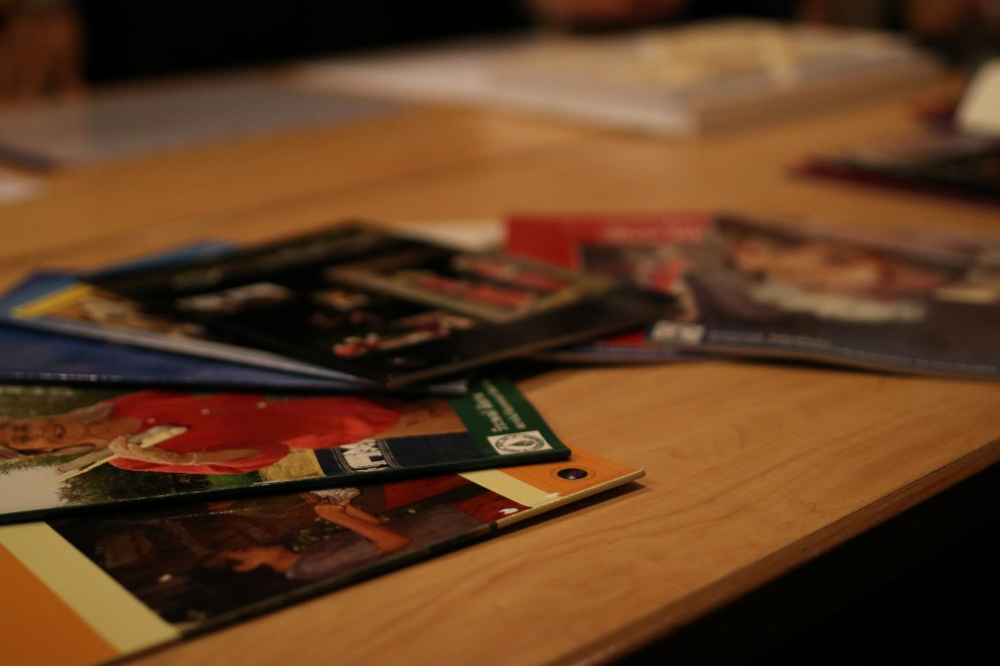

Research

The Museum Anthropology created the simulation of the ethnic village in the exhibition for present their daily life such as their principles, beliefs, foods, clothes. The audience can have a part in the museum 4.0 concept. Also, support the invitation of media cultures of their society from learning in digital devices.

The Research project based on the development in the institute intends people
from many cultures can live together and to inherit the ethnic cultures nowadays.
1. The Ethnic plan is the inheritance of Languages and cultures of the ethnic groups.
2. To deal with the cultures by evenly creating economical values.
The 14 ethnic community take care of the cultural heritage with the invention of economic ways.
3. The Self-Wisdom among the older people in Ethnic groups has been present the ways to carry on the value stability.
By many communications over lifestyle for a pass on the wisdom in the take care of older people.
The steadiness in working cause many benefits in the Ethnic community such as Experiences and their hometown.